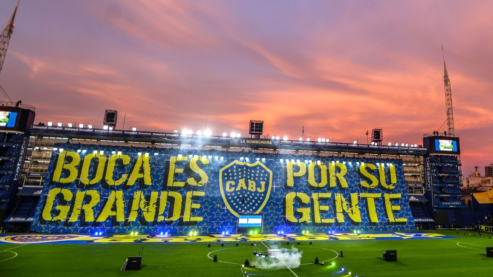
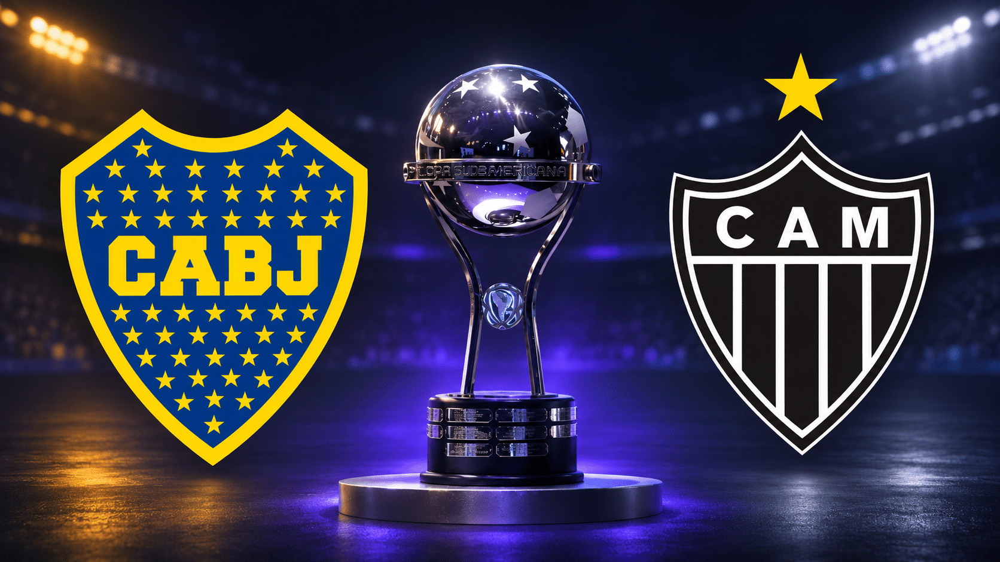

Pasión Xeneize
Historia resumida de Boca Juniors

El Club Atlético Boca Juniors fue fundado el 3 de abril de 1905 en el barrio de La Boca, en Buenos Aires, Argentina, por un grupo de jóvenes inmigrantes italianos. Desde sus comienzos, el equipo se caracterizó por su espíritu competitivo y por representar la identidad de su comunidad. Sus tradicionales colores azul y amarillo surgieron de una historia popular relacionada con un barco de bandera sueca que llegó al puerto de Buenos Aires. Con el paso del tiempo, estos colores se convirtieron en uno de los símbolos más reconocidos del fútbol mundial.
A lo largo de su historia, Boca Juniors ha construido una trayectoria llena de grandes triunfos y momentos inolvidables. Su estadio, conocido como La Bombonera, fue inaugurado el 25 de mayo de 1940 y se convirtió en el hogar de millones de aficionados. El club ha conseguido importantes títulos nacionales e internacionales, entre ellos seis Copas Libertadores y tres Copas Intercontinentales. Entre sus conquistas más recordadas se encuentran las victorias frente al Real Madrid en el año 2000 y el AC Milan en 2003, que consolidaron su reconocimiento a nivel internacional.
Además de sus títulos, Boca Juniors ha contado con grandes figuras que dejaron una huella imborrable en su historia, como Diego Maradona, Juan Román Riquelme, Martín Palermo y Carlos Tévez. Estos futbolistas contribuyeron a fortalecer la identidad del club y a escribir algunas de sus páginas más importantes. Actualmente, Boca Juniors es considerado uno de los equipos más populares y representativos de Argentina y Sudamérica, reconocido por su apasionada hinchada, su tradición futbolística y el orgullo que representa vestir los colores azul y oro.
Conócenos en video
Datos interesantes
- Fundación: 3 de abril de 1905.
- Ciudad: Buenos Aires, Argentina.
- Estadio: Alberto J. Armando, conocido como La Bombonera.
- Colores tradicionales: azul y amarillo.
- Apodo: Xeneize.
Próximo partido

Para mayor información sobre este partido, ingresa aquí.